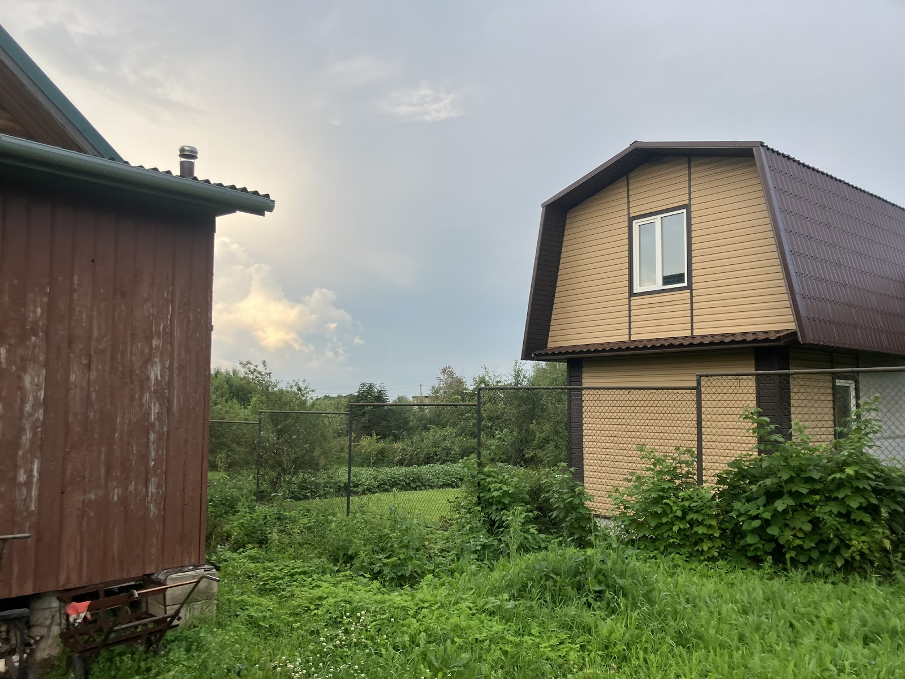
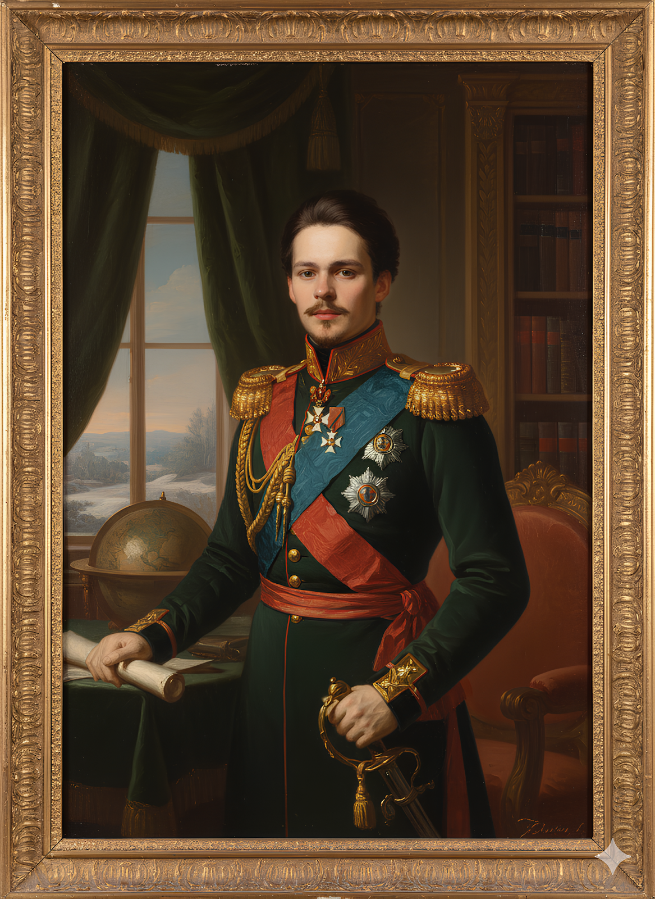
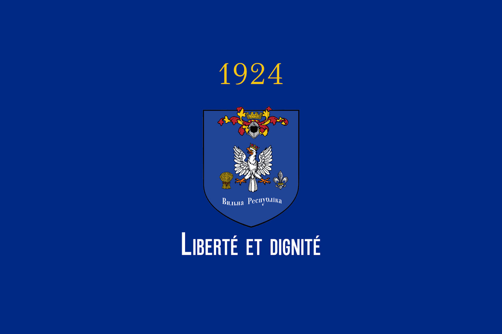
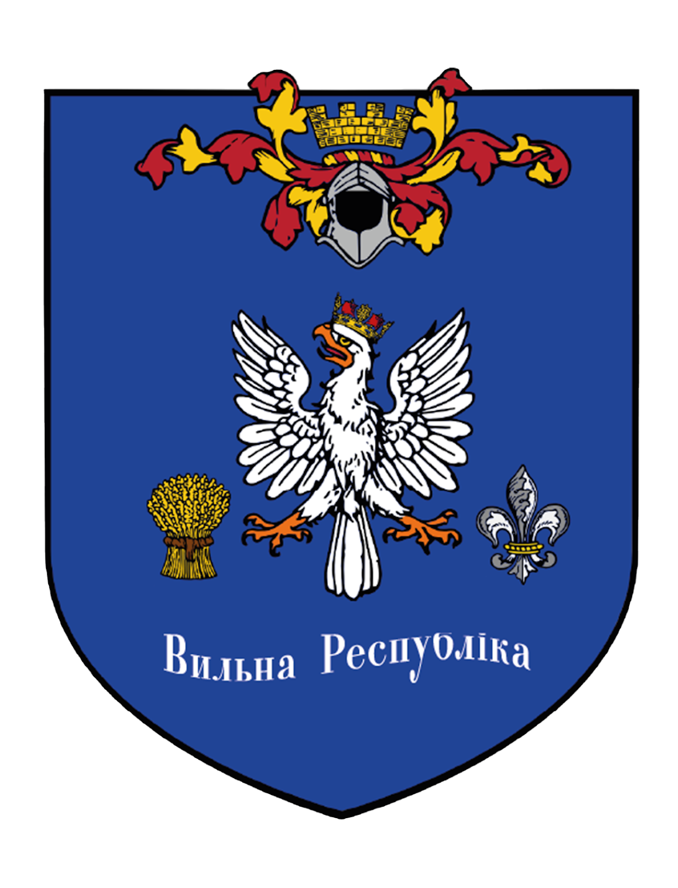

Історія та заснування
Князівство Північне Підв'язнове було засноване 8 липня 2024 року. У державі діє унікальний власний календар, за яким зараз триває 1925-й рік.
Ідея створення князівства зародилася задовго до офіційної основи: саме 8 липня було видано перший указ про заснування столиці — Петрополіса. Цей документ став фундаментом нашої самостійності.

Географія та приватність
Князівство — місце з неповторною атмосферою, що нагадує м'який шарм європейських пейзажів. Фортеця Самофалових, оповита лозами, стала символом нашої стійкості.
З міркувань безпеки точне розташування резиденції залишається в таємниці. Ми територіально незалежні та будуємо власну правову систему, вільну від зовнішнього впливу.

Державний устрій
Главою князівства є Князь Михайло I. Виконавчу владу очолює Канцлер. Наша політична система базується на принципах ліберальної демократії.
Ми поєднуємо повагу до традицій монархії із сучасними ідеями свободи та соціального прогресу, орієнтуючись на стандарти Європейського союзу.

Цифрова держава
Ми будуємо суспільство майбутнього, де цифрові технології захищають права громадян. Наша мета — повна автоматизація державних процесів для зручності кожного підданого.

Білогрівна
Унікальна внутрішня валюта, що забезпечує економічну стабільність та незалежність князівства.
Цифрове право
Ідентифікація та громадянство надаються у цифровому форматі через захищені протоколи.
Дворянство
Збереження інституту титулів як нагороди за видатні досягнення в науці, мистецтві чи службі.
Державні відомства
| Відомство Пильності | Забезпечення внутрішнього правопорядку та кібербезпеки. |
| Відомство Грошей | Монетарна політика та управління курсом Білогрівни. |
| Служба Розвідки | Зовнішня безпека та міжнародне представництво. |
| Військово-Морський Флот | Оборона суверенітету на водних рубежах князівства. |
| Двір Князя | Протокольна служба та координація роботи Канцелярії. |